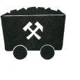
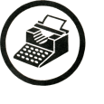
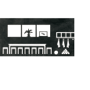

Idea Fabrication Lab
01
Concept Smelting & Extraction
Raw historical ore feeds the intake line. Precisionist fragmentation techniques isolate the pure structural spine.

02
Structural Staging Models
Compiling the intellectual Modellbücher, so that spatial coordinates and structural geometries are plotted with accuracy.

03
The Dialectical Balance Sheet
Society processed as a dynamic blueprint. Historical data points map cleanly onto clean, linear axes.

04
Collective Output Delivery
Theoretical products clear the production line, engineered into clear, unadorned utilities for immediate collective use.
